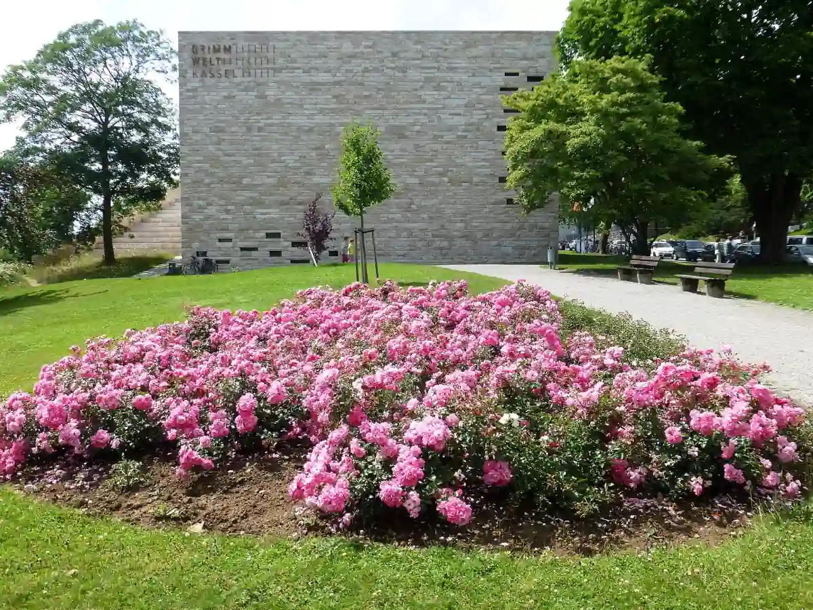

Start / Bei Regen
Aaron Schiele
geprüft am 09.10.2026
geprüft am 09.10.2026
Überblick: Regenziele mit Zeiten und Preisen
| Ziel | Geöffnet | Eintritt Erwachsene | Ermäßigt / Kinder |
|---|---|---|---|
| Schloss Wilhelmshöhe | Di bis So 10 bis 17 Uhr | 8 Euro (Tagesticket Wilhelmshöhe) | 5 Euro, unter 18 frei |
| Grimmwelt | Di bis So 10 bis 18 Uhr | 10 Euro | 7 Euro, unter 6 frei |
| Naturkundemuseum | Di bis So, Mi bis 20 Uhr | 5 Euro | 3 Euro, unter 6 frei |
| Hessisches Landesmuseum | Di bis So 10 bis 17 Uhr | 8 Euro | 5 Euro, unter 18 frei |
| Planetarium (Orangerie) | Vorstellungen nach Kalender | 8 Euro | 5 Euro, unter 18 Jahren 2 Euro |
| Kurhessen-Therme | täglich 9 bis 22 Uhr | ab 18 Euro (2 Stunden) | Kinder unter 3 frei |
Denk an den Montag: Dann haben die Museen zu, außer an Feiertagen – die Therme aber hat offen.
Am Bergpark: Schloss, Löwenburg und Therme
Schloss Wilhelmshöhe ist wie gemacht für einen Regentag: Drinnen hängen Rembrandt, Rubens, Dürer und Tizian, und durch die Fenster schaust du auf den nassen, grünen Park. Im Untergeschoss wartet die Antikensammlung. Das Tagesticket Wilhelmshöhe kostet 8 Euro, unter 18 ist frei; während der Ausstellung „DÜRER“ sind es 12 Euro. Mehr unter Schloss Wilhelmshöhe.
Die Löwenburg siehst du ohnehin nur von innen, mit Führung. Im Winter ist sie freitags bis sonntags geöffnet. Mehr unter Löwenburg Kassel.
Die Kurhessen-Therme liegt am Rand des Bergparks und hat jeden Tag von morgens bis abends offen. Draußen prasselt der Regen, drinnen liegst du im warmen Wasser – besser lässt sich ein grauer Tag kaum nutzen.
| Thermalbad | Mo bis Do | Fr bis So und feiertags |
|---|---|---|
| 2 Stunden | 18,00 Euro | 19,50 Euro |
| 4 Stunden | 22,50 Euro | 24,00 Euro |
| Tageskarte | 26,00 Euro | 28,00 Euro |
| Tageskarte mit Sauna | 32,00 Euro | 34,00 Euro |
Kinder bis zum 3. Geburtstag sind frei.
In der Stadt: Grimmwelt, Ottoneum und Landesmuseum
Vom Bahnhof Wilhelmshöhe fahren die Trams 1, 3 und 4 zur Haltestelle Rathaus, von dort sind es ca. 7 Minuten zur Grimmwelt.
Die Grimmwelt erzählt von den Brüdern Grimm, ihren Märchen und ihrer Liebe zur Sprache. Herzstück sind ihre eigenen Handexemplare der „Kinder- und Hausmärchen“, und in vielen Bereichen darfst du selbst mitmachen. Mehr unter Grimmwelt Kassel.
Das Naturkundemuseum im Ottoneum am Steinweg holt Saurier, Haie und Mammuts ins Trockene. Ab 10. Oktober 2026 zeigt die Sonderausstellung „Höher Schneller Weiter“, wie Tiere sich bewegen. Mittwochs ist bis 20 Uhr offen.
Das Hessische Landesmuseum am Brüder-Grimm-Platz führt durch die Geschichte Hessens. Zu jeder vollen und halben Stunde geht es auf den Turm – vielleicht reißt der Himmel ja gerade auf. Wegen Bauarbeiten am Brüder-Grimm-Platz kann der Zugang eingeschränkt sein.
An der Karlsaue: Planetarium
In der Orangerie liegt Hessens größtes Planetarium: Wenn draußen die Wolken hängen, siehst du hier trotzdem die Sterne. Eine Vorstellung kostet 8 Euro, unter 18 Jahren 2 Euro. Kinder unter 3 Jahren dürfen nicht mit in den Saal. Die Vorstellungszeiten stehen im Kalender von Hessen Kassel Heritage. Mehr unter Orangerie und Karlsaue.
Ein Regentag mit Plan
Unser Tipp für einen Tag am Bergpark: vormittags Schloss Wilhelmshöhe, nachmittags ab in die Therme. Für einen Tag in der Stadt passen Grimmwelt und Landesmuseum gut zusammen, sie liegen nur wenige Minuten auseinander. Mit Kindern lohnt sich das Naturkundemuseum; mehr Ideen unter Kassel mit Kindern.
Häufige Fragen
Was kann man in Kassel bei Regen machen?
Ins Schloss Wilhelmshöhe, die Grimmwelt, das Naturkundemuseum oder das Landesmuseum gehen, eine Vorstellung im Planetarium sehen oder in der Kurhessen-Therme entspannen.
Was hat in Kassel montags bei Regen geöffnet?
Die Kurhessen-Therme, täglich von 9 bis 22 Uhr. Die großen Museen sind montags zu, an Feiertagen aber offen.
Was kostet die Kurhessen-Therme?
2 Stunden Thermalbad kosten 18,00 Euro von Montag bis Donnerstag und 19,50 Euro am Wochenende, die Tageskarte 26,00 bzw. 28,00 Euro.
Welches Museum ist bei Regen gut für Kinder?
Das Naturkundemuseum mit seinen Sauriern und die Grimmwelt mit ihrer Märchenwelt. In beiden sind Kinder unter 6 Jahren frei.
Welche Museen in Kassel sind für Kinder kostenlos?
Schloss Wilhelmshöhe, die Löwenburg und das Hessische Landesmuseum sind für Kinder unter 18 Jahren frei.
Quellen abgerufen am 09.10.2026
- Hessen Kassel Heritage Schloss Wilhelmshöhe · Dauerausstellung Schloss Wilhelmshöhe · Löwenburg · Hessisches Landesmuseum · Planetarium
- Grimmwelt Besucherinformationen · Erlebnisraum GRIMMWELT
- Stadt Kassel Naturkundemuseum, Besuch · Naturkundemuseum
- Kurhessen-Therme Startseite · Preise
- Wikipedia Bad Wilhelmshöhe
Weiterlesen

Grimmwelt Kassel
Grimmwelt Kassel: Öffnungszeiten, Eintritt für Erwachsene, Kinder und Familien, was die Ausstellung zeigt, Dachterrasse und Anreise mit Tram und Auto.
Weiterlesen
Kassel mit Kindern
Kassel mit Kindern: Bergpark und Löwenburg, Grimmwelt, Naturkundemuseum, Planetarium und Karlsaue mit Öffnungszeiten und Kinderpreisen im Überblick.
WeiterlesenSchloss Wilhelmshöhe
Schloss Wilhelmshöhe in Kassel: welche Sammlungen du siehst, wann das Museum offen ist, was das Tagesticket kostet und wie du mit der Tram 1 hinkommst.
Weiterlesen